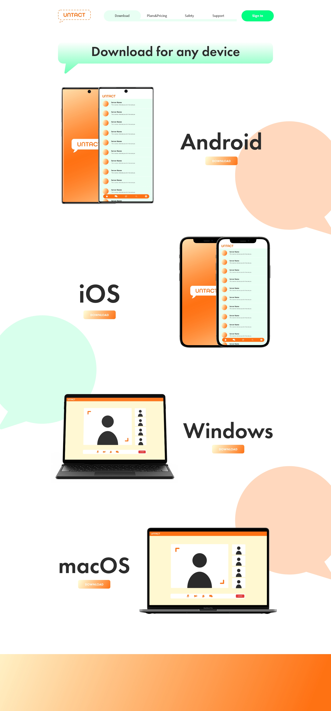
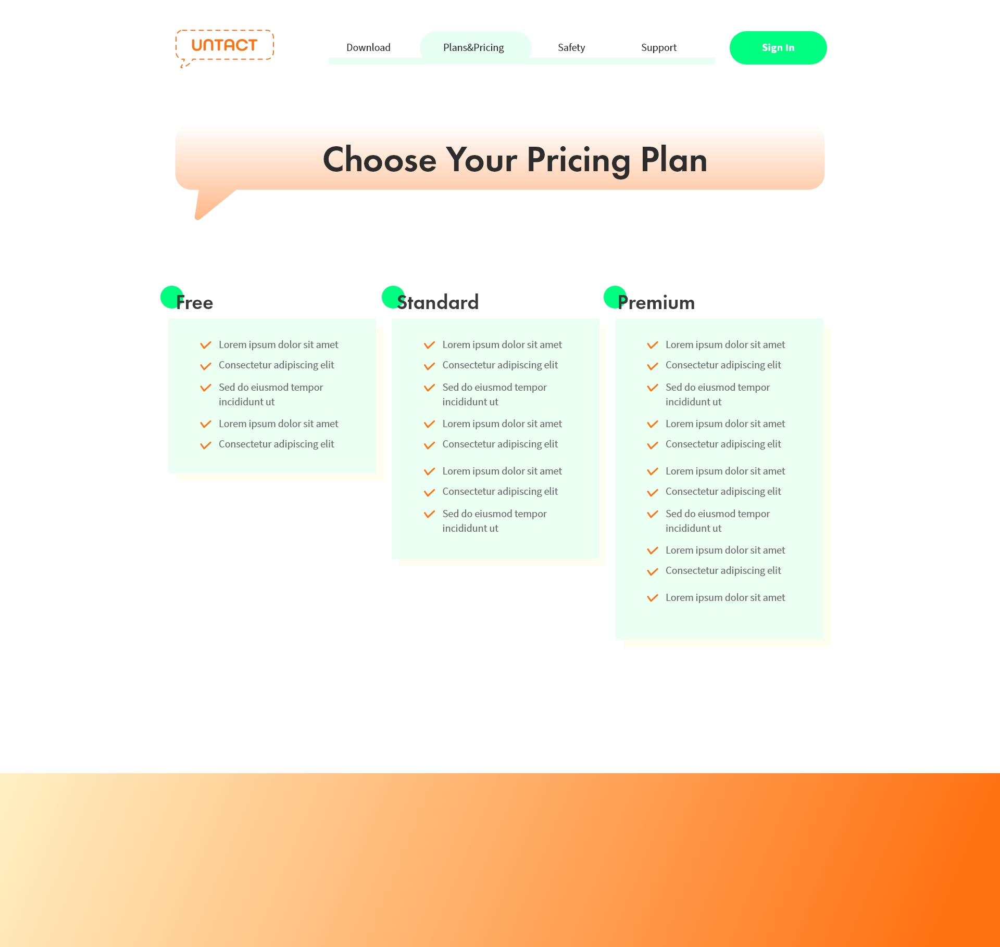
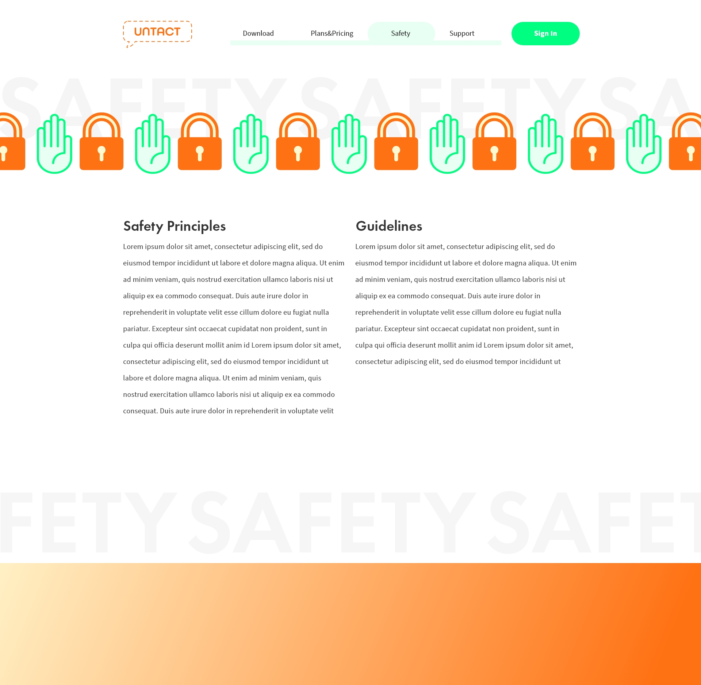
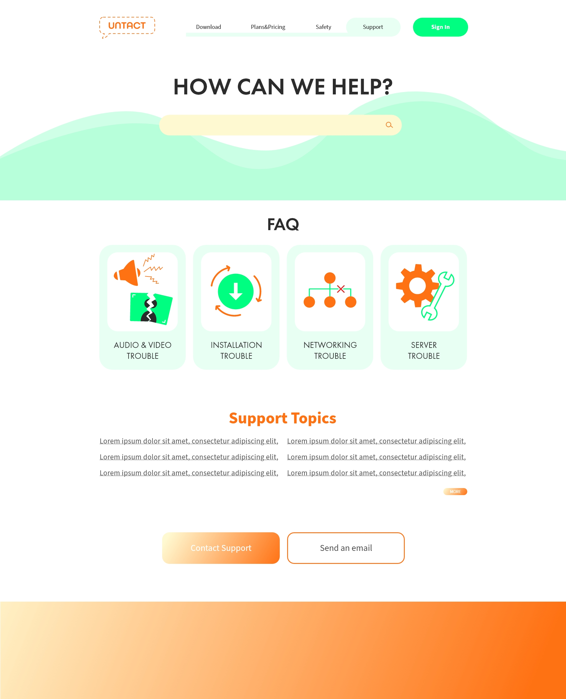

UNTACT
Multi-Page Site Design
This project is to design a multi-page site for a new messenger application that I created, named 'UNTACT'. This application combines functions we need now, such as video meetings, chatting, and sharing files. I made all the illustrations, the logo, icons, and mockups. I chose neon green and orange as the primary colors to make them seem energetic. Since it is a messenger application website, I used a lot of chatting symbols, such as speaking bubbles and other icons.




